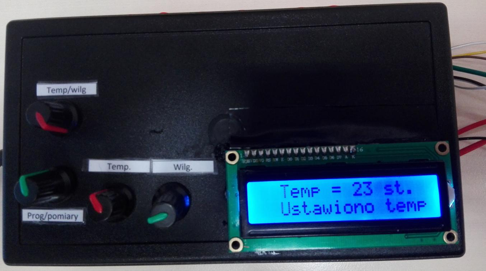
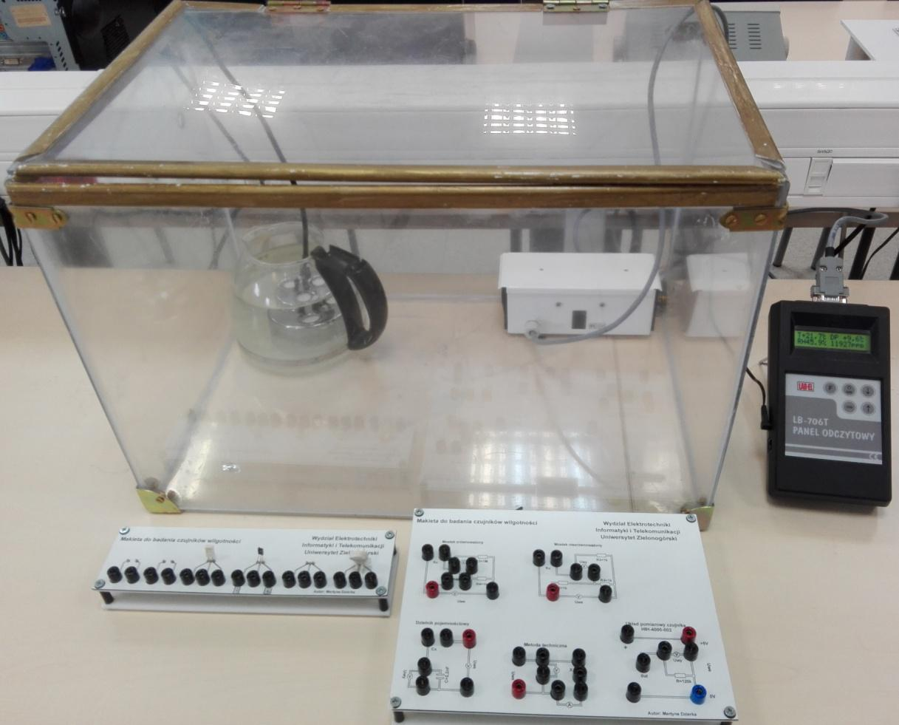

STEROWNIK DLA KOMORY KLIMATYCZNEJ DO BADANIA CZUJNIKÓW WILGOTNOŚCI
Praca obejmuje omówienie podstawowych metod pomiaru temperatury oraz wilgotności powietrza, dokonanie przeglądu dostępnych na rynku czujników temperatury i wilgotności, następnie wybór właściwych czujników i w ostateczności zaprojektowanie układu regulacji temperatury oraz wilgotności powietrza w komorze klimatycznej, znajdującej się w laboratorium dydaktycznym. W skład sterownika wchodzą czujniki temperatury i wilgotności, wentylator, grzałka, nawilżacz oraz mikrokontroler na bazie platformy Arduino Uno. Grzałka składa się z trzech rezystorów drutowych o wartościach rezystancji 4,7Ω oraz mocy 25W. Oporniki połączone są ze sobą szeregowo. Sterowanie grzałką i nawilżaczem realizowane jest dwustanowo. Z kolei do sterowania chłodzeniem – wentylatorem wykorzystany został regulator PID. Do zaprojektowania regulatora wyznaczono model układu chłodzenia posługując się narzędziem Simulink.

